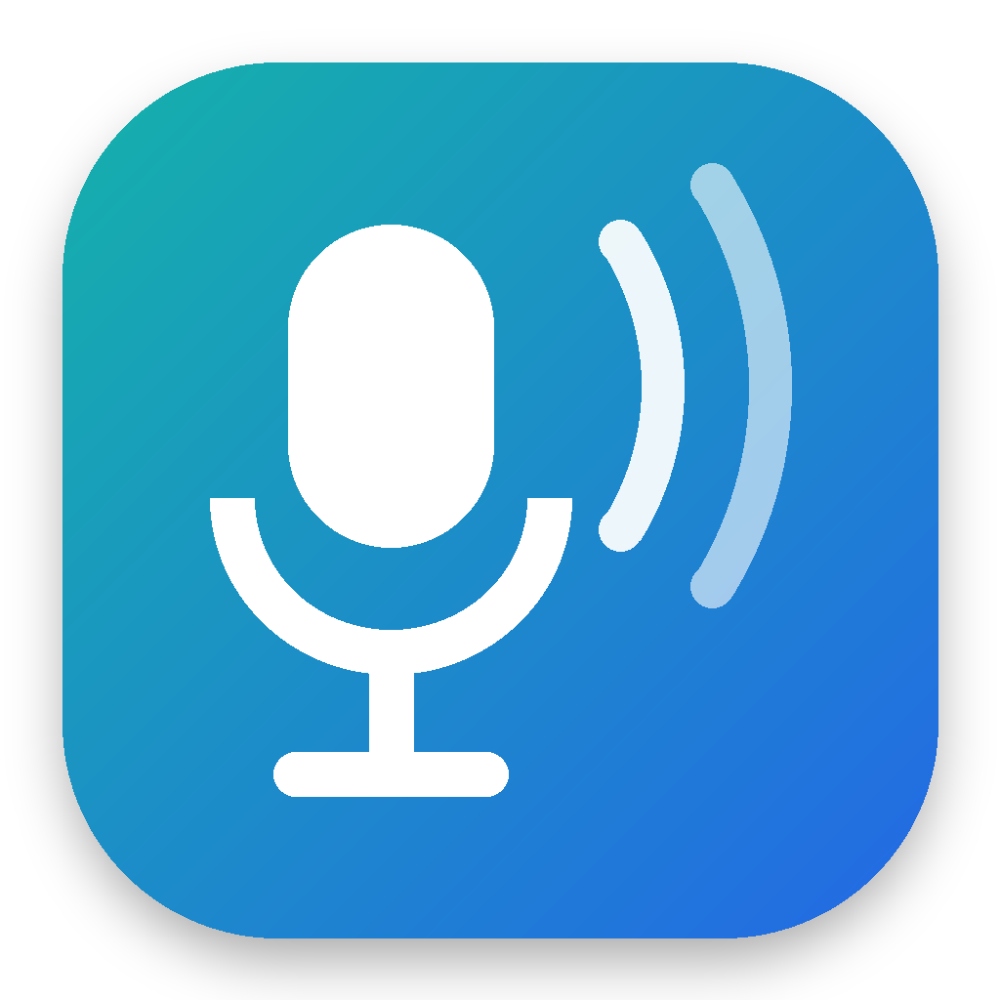

按住熱鍵說話，放開就打進任何程式。
台灣華語、中英夾雜都聽得懂，錄音不存檔，全程在你自己的電腦上執行。
Windows 內建語音輸入在台灣華語、專有名詞、中英夾雜時常常聽錯，有時還會冒出沒講過的「謝謝收看」。所以我把台灣華語模型、自動標點、防幻覺和個人名詞表組在一起，做成一個按著就能講的小工具。
| 按住 右 Ctrl 說話 | 照你說的打出來（繁體、有標點） |
| 按住 F9 說話 | AI 整理成通順的書面語 |
| 按住 F7 說話 | 說中文，打出翻譯（預設英文） |
| 按一下 F8 | 長段口述，停頓幾秒自動結束 |
| 選取錯字按 F10 | 說出正確的詞，直接改掉並記住 |
F9 整理、F7 翻譯需另裝本機 AI（Ollama 或 LM Studio），也可選 Claude（會送到雲端）。
D:\BreezeVoiceInputpowershell -ExecutionPolicy Bypass -File .\install.ps1需求：Windows 10／11、NVIDIA 顯示卡（建議 8GB 以上顯示記憶體）、Python 3.10～3.12、約 4GB 空間（第一次啟動自動下載模型）。
歡迎到 GitHub Issues 跟我說哪裡不好用、哪個詞一直聽錯，完全沒壓力～